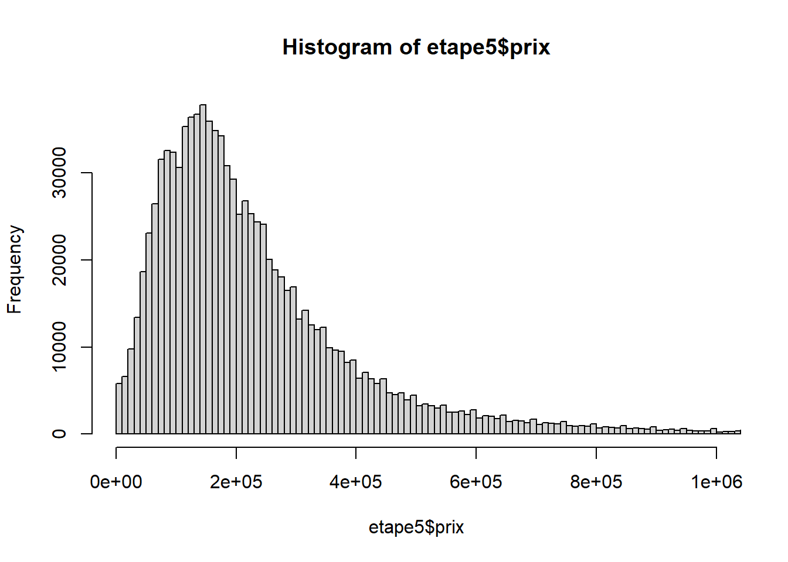
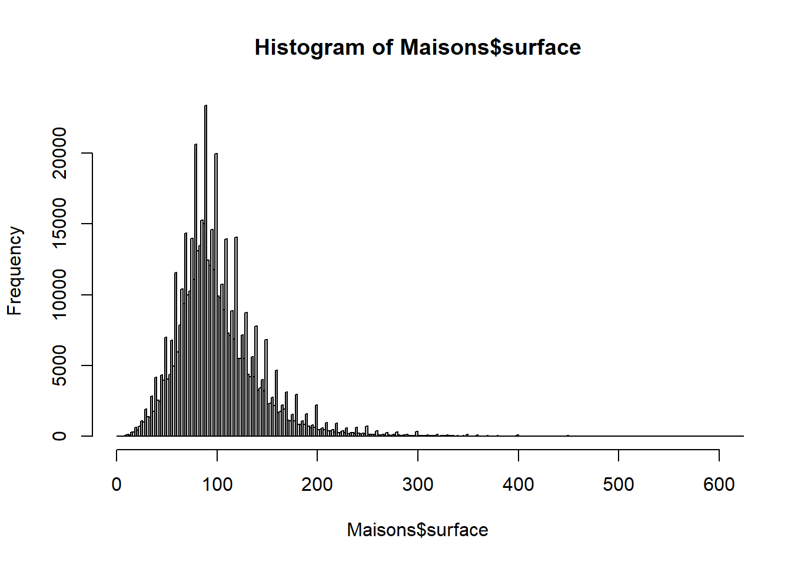
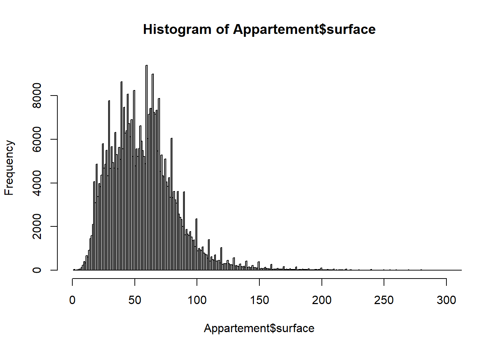
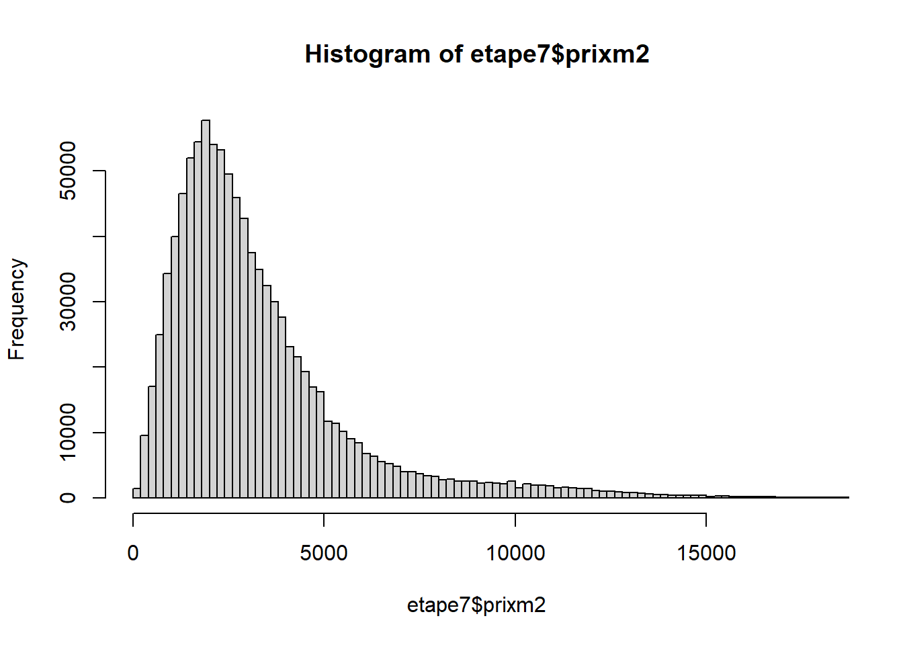
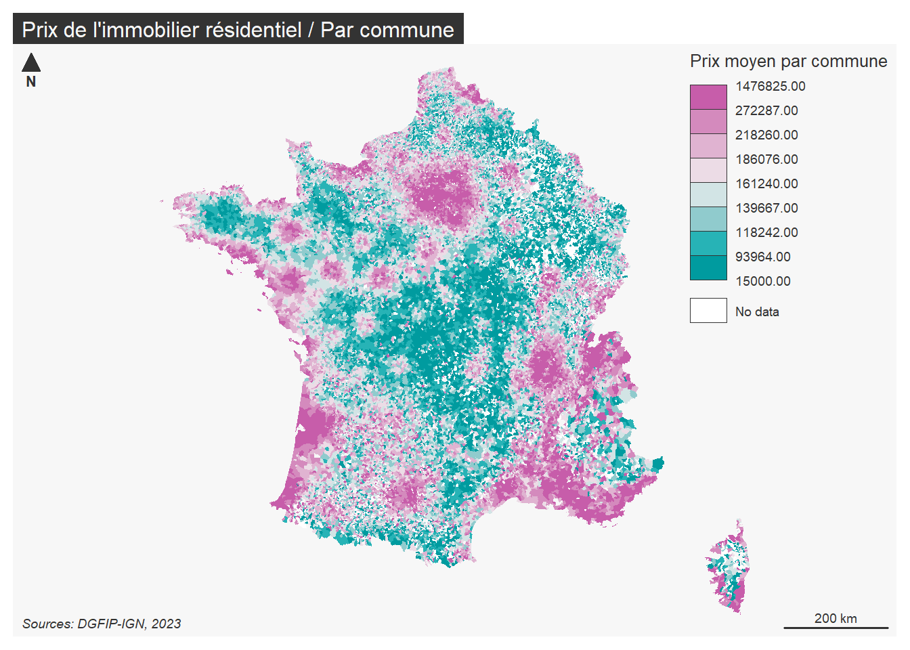

etape1 <- DVFannee %>% filter(nature_mutation == "Vente")
etape1bis <- etape1 %>% filter(type_local == "Maison" | type_local == "Appartement")Preparation_DVF_France
Préparer des indicateurs sur le marché immobilier résidentiel par commune à partir des données DVF géolocalisées
Ce script R permet de calculer par année plusieurs indicateurs sur le marché de l’immobilier résidentiel par commune :
Le nombre de mutations par commune
La nombre de ventes de maisons et d’appartements par commune
Le pourcentage de ventes de maisons et d’appartements par commune
Le prix moyen par commune
Le prix moyen au m² par commune
Chargement des packages nécessaires
When you click the Render button a document will be generated that includes both content and the output of embedded code. You can embed code like this:
Chargement des données
Le jeu de données utilisé est celui des Demandes de valeurs foncières géolocalisées produit par Etalab. Ce dataset est disponible par année, à l’échelle de la France ou des départements sur la plateforme de données ouvertes data.gouv.fr.
Page Data.gouv : https://www.data.gouv.fr/fr/datasets/demandes-de-valeurs-foncieres-geolocalisees/
Filtre et nettoyage des données
Etape1> Sélection des mutations de type “Ventes” de “Maison” et “Appartement”
Etape2> Sélection et renommage des variables
etape2 <- etape1bis %>% select(id = id_mutation, disposition = numero_disposition, parcelle= id_parcelle, date = date_mutation, nature = nature_mutation, codecommune = code_commune, departement = code_departement, type = type_local, surface = surface_reelle_bati, pieces = nombre_pieces_principales, prix = valeur_fonciere, latitude, longitude)Etape3> Remplacement des cellules vides par des NA et suppression des NA
etape2[etape2==""] <- NA
etape3 <- etape2 %>% na.omit()Suppression des doublons et des mutations multiventes
Etape4> Suppression des doublons et des mutations multiventes
unique <- etape3 %>% distinct(id, prix, surface)
nbunique <- unique %>% group_by(id) %>% summarise(nb = n())
etape4 <- nbunique %>% filter(nb==1)Etape5> Jointure attributaire pour récupérer les informations des mutations
merge <- merge(etape4,etape3, by="id")
etape5 <- merge %>% distinct(id, .keep_all = TRUE) %>% select(id, date, type, nature, codecommune, prix, surface, pieces, latitude, longitude)Modification des formats des colonnes
etape5$prix <- as.numeric(etape5$prix)
etape5$surface <- as.numeric(etape5$surface)
etape5$piece <- as.numeric(etape5$piece)Suppression des valeurs aberrantes
Fixer un seuil minimal des prix (méthode des percentiles)
quantile(etape5$prix, 0.01) 1%
18000 Fixer un seuil maximal des prix (identification par un histogramme)
hist(etape5$prix, breaks = 100000, xlim = c(0,1000000)) 
Créer deux jeux de données (maisons / appartements)
Maisons <- etape5 %>% filter(type == 'Maison')
Appartement <- etape5 %>% filter (type == 'Appartement') Fixer un seuil maximal des surfaces (histogramme)
hist(Maisons$surface, nclass = 500, xlim = c(0,600)) 
hist(Appartement$surface, nclass = 500, xlim = c(0,300))
Etape 6> Sélection des bornes de prix et de surface
etape6 <- etape5 %>% filter(between(prix, 15000, 10000000)) %>%
filter(case_when(type=='Appartement' ~ between(surface, 10, 250)) | case_when(type=='Maison' ~ between(surface, 10, 400)))Création de la variable de prix au m² et filtre des valeurs extrêmes et aberrantes
Etape7> Création de la variable prix/m²
etape7 <- etape6 %>% mutate(prixm2 = prix/surface)Etape8 > Sélection des bornes de prix au m²
Fixer un seuil minimal des prix au m² (percentile)
quantile(etape7$prixm2, 0.01) 1%
388.3495 Fixer un seuil maximal des prix au m² (histogramme)
hist(etape7$prixm2, breaks = 2000, xlim = c(0,18000))
Filtres des valeurs des prix au m2
etape8 <- etape7 %>% filter(between(prixm2,330,18000))Transformation de la date en année
etape8$date <- as.character(etape8$date)
etape8 <- etape8 %>% mutate(ANNEE = substr(etape8$date, 1, 4))Arrondir les variables numériques
etape8$prix <- round(etape8$prix)
etape8$prixm2 <- round(etape8$prixm2)Finaliser le dataset et purger l’environnement de travail
DVFanneeOK <- etape8
rm(list=setdiff(ls(), "DVFanneeOK"))Agrégation spatiale à la commune
Transformer le tableau (dataframe) des mutations en couche spatiale (objet sf)
DVFgeo<- st_as_sf(DVFanneeOK, coords=c("longitude","latitude"), crs=4326)
DVFgeo<- st_transform(DVFgeo, 2154)Importer la couche des communes de France (Admin Express IGN) et la reprojeter
Communes <- st_read(dsn = "E:/AdminExpress/COMMUNE.shp", stringsAsFactors = FALSE)Reading layer `COMMUNE' from data source `E:\AdminExpress\COMMUNE.shp' using driver `ESRI Shapefile'
Simple feature collection with 34826 features and 57 fields
Geometry type: MULTIPOLYGON
Dimension: XY
Bounding box: xmin: 99040 ymin: 6046546 xmax: 1242443 ymax: 7110479
Projected CRS: RGF93 Lambert 93Communes<- st_transform(Communes, 2154)Calculer des résumés statistiques sur les prix, prix au m2 et surface par commune
Maisons <- DVFgeo %>% filter(type=='Maison')
Appartements <- DVFgeo %>% filter(type=="Appartement")
Communes <- Communes %>% mutate(NbMaisons = lengths(st_intersects(Communes, Maisons)))%>% mutate(NbApparts = lengths(st_intersects(Communes, Appartements)))
DVFgeo <- st_join(DVFgeo, Communes[c("INSEE_COM", "NbMaisons", "NbApparts")], left = TRUE, .predicate = within)
DVFgeodf <- as.data.frame(DVFgeo)
Agreg <- DVFgeodf %>% group_by(INSEE_COM) %>%
summarise(Annee = max(ANNEE),
Nb_mutations = n(),
NbMaisons=max(NbMaisons),
NbApparts = max(NbApparts),
propmaison = sum(type == "Maison")/n()*100,
propappart = sum(type == "Appartement")/n()*100,
PrixMoyen = mean(prix),
Prixm2Moyen = mean(prixm2),
SurfaceMoy = mean(surface))Jointure attributaire entre récapitulatif des communes et la couche communes
Communes <- merge(Communes, Agreg, by.x = "INSEE_COM", by.y = "INSEE_COM")Cartographie des prix moyens par commune
mf_theme("default")
mf_map(
x = Communes,
var = "prix",
type = "choro",
breaks = "quantile",
nbreaks = 8,
pal = "Tropic",
rev = TRUE,
border = NA,
#leg_pos = NA ,
leg_title = "Prix moyen par commune"
)
mf_layout(title = "Prix de l'immobilier résidentiel / Par commune",
credits = paste0("Sources: DGFIP-IGN, 2023")
)
Ecrire le jeu de données final en csv
write.csv(Agreg, 'DVF2022.csv')